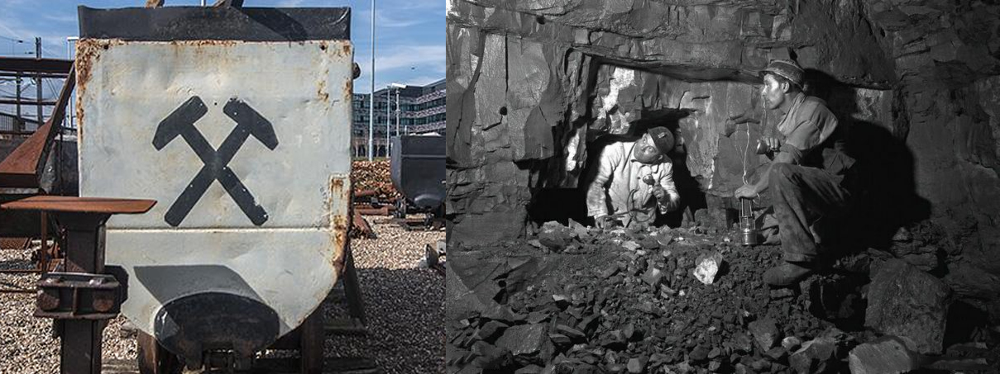

Tegen het einde van de 19e eeuw bleef de vraag naar steenkool toenemen. In 1899 stelde de Nederlandse regering een mijnbouwcommissie aan om de wenselijkheid van kolenwinning in het land te onderzoeken. Na het rapport van de commissie in 1900 besloot de regering een wetsvoorstel in te dienen om staatsuitbuiting mogelijk te maken. De mijnwet van 24 juni 1901 bepaalde dat Limburg steenkool zou gaan winnen. Volgens deze wet wordt het gehele Zuid-Limburgse kolenmijngebied, dat nog niet in concessie is gegeven aan particulieren, toegewezen aan de staat voor mijnbouw. Het land werd concessiehouder en kreeg het eigendom van de mijn. Deze wetgeving is een reactie van het kabinet op het initiatief van particuliere kapitaalverschaffers, die in de laatste 25 jaar van de 19e eeuw in Nederland begonnen met particuliere mijnbouw. Om dit doel te bereiken werd op 1 mei 1902 in Limburg het door de staat gefinancierde bedrijf Staatsmijnen opgericht. De eerste directeur was H.J.E. Winkbach. De volgende Staatsmijnen zijn in Limburg in bedrijf geweest:
De Staatsmijn Beatrix (1954) bij Vlodrop is nooit in productie genomen. Na de voltooiing van de twee schachten stopte de bouw. Het voormalige hoofdkantoor van Staatsmijnen staat sinds 1906 in Heerlen. Het gebouw is sinds 1986 in verschillende fasen afgebroken. Staatsmijnen (DSM sinds 1973) verhuisde naar een nieuw kantoorgebouw elders in de stad.
